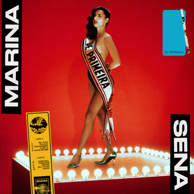
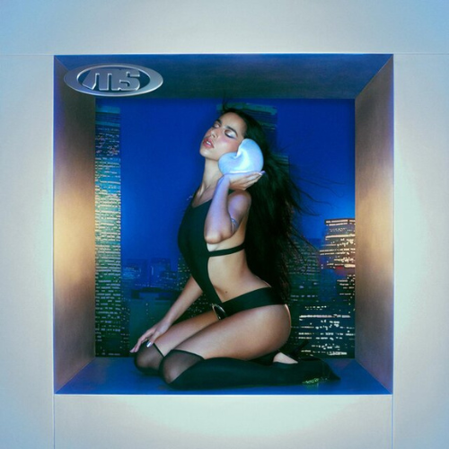
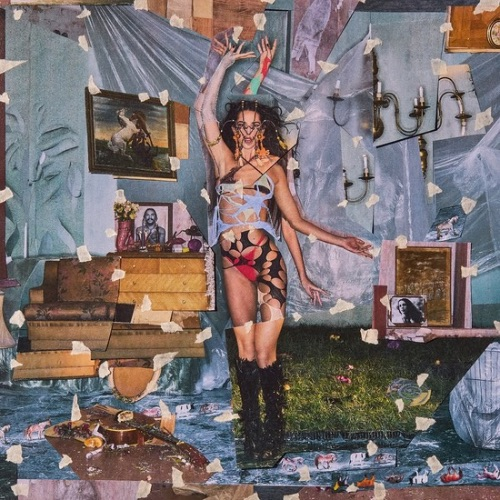

Marina Sena
Uma das vozes que se destacaram na nova música brasileira.
Marina Sena é uma cantora e compositora brasileira nascida em Taiobeiras, Minas Gerais, em 26 de setembro de 1996. Começou a compor ainda na adolescência e passou por grupos musicais antes de iniciar sua carreira solo.
Ao longo de sua carreira, lançou três álbuns de estúdio: De Primeira, Vício Inerente e Coisas Naturais.
De Primeira

Sobre o álbum
Lançado em 2021, De Primeira foi o primeiro álbum de estúdio de Marina Sena. O álbum apresenta uma mistura de ritmos brasileiros com elementos do pop e da música contemporânea.
O trabalho ajudou a apresentar Marina Sena para um público maior e conta com músicas que se tornaram bastante conhecidas, como Por Supuesto.
Ano: 2021
Tracklist
- Me Toca
- Pelejei
- Por Supuesto
- Cabelo
- Voltei Pra Mim
- Temporal
- Tamborim
- Amiúde
- Seu Olhar
- Santo
Vício Inerente

Sobre o álbum
Vício Inerente foi lançado em 2023 e é o segundo álbum de estúdio de Marina Sena. O trabalho apresenta uma sonoridade que mistura pop, música brasileira e elementos eletrônicos.
O álbum mostra uma nova fase da artista, com músicas que exploram diferentes ritmos e elementos da música contemporânea.
Ano: 2023
Tracklist
- Dano Sarrada
- Olho no Gato
- Tudo Pra Amar Você
- Tudo Seu
- Mande um Sinal
- Me Ganhar
- Que Tal
- Meu Paraíso Sou Eu
- Partiu Capoeira
- Mais de Mil
- Sonho Bom
- Pra Ficar Comigo
Coisas Naturais

Sobre o álbum
Coisas Naturais é o terceiro álbum de estúdio de Marina Sena, lançado em 2025. O álbum apresenta diferentes influências musicais e explora novas sonoridades.
O trabalho representa uma nova etapa na carreira da artista, reunindo músicas com diferentes propostas e participações especiais.
Ano: 2025
Tracklist
- Coisas Naturais
- Numa Ilha
- Desmitificar
- Anjo
- TOKITÔ
- Sem Lei
- SENSEI
- Lua Cheia
- Combo da Sorte
- Mágico
- Doçura
- CARNAVAL
- Ouro de Tolo